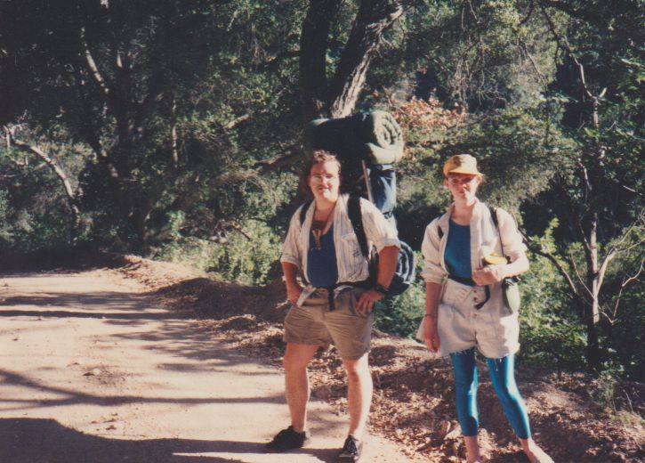
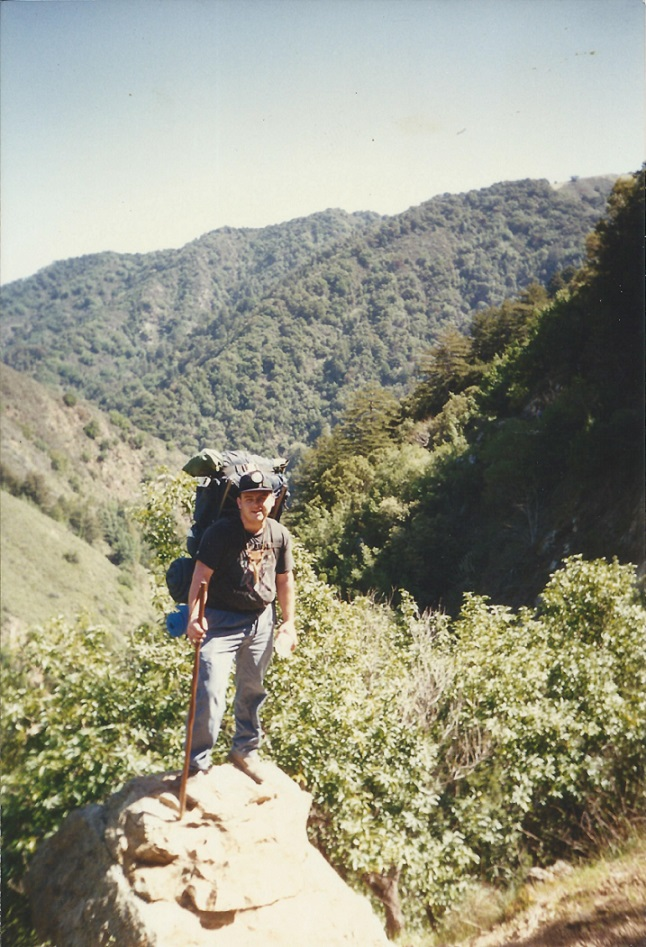
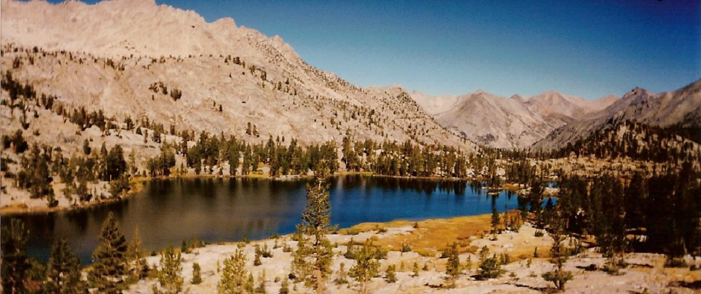
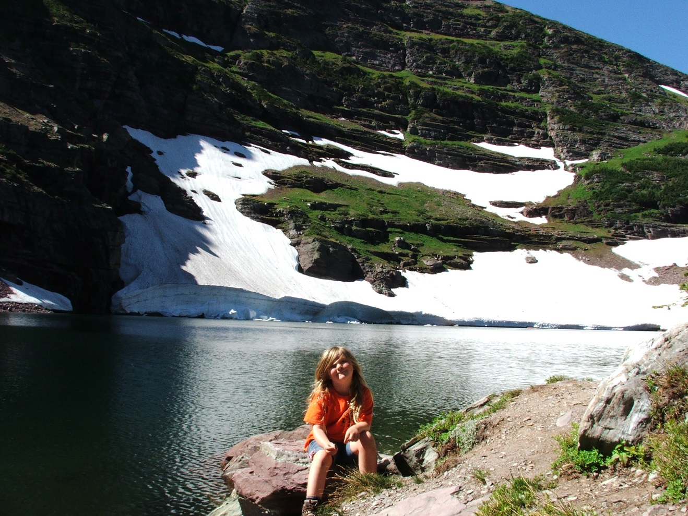
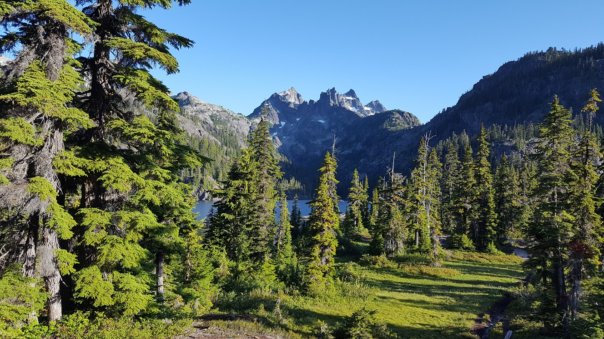
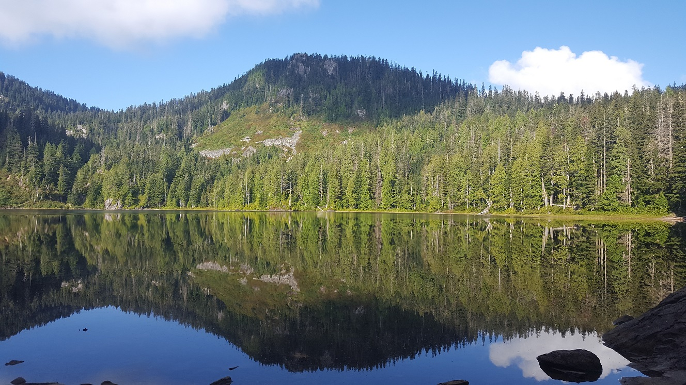
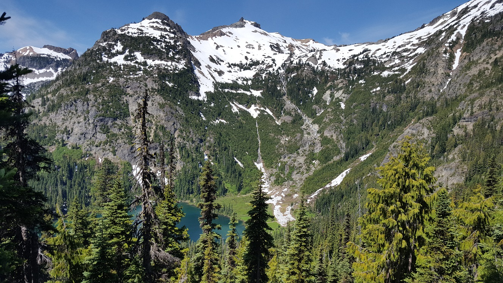
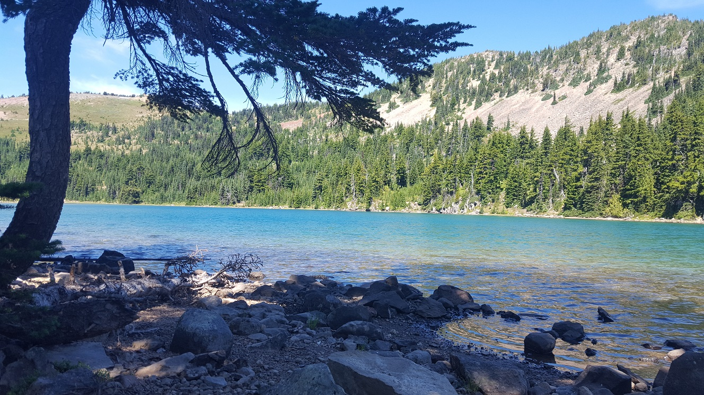
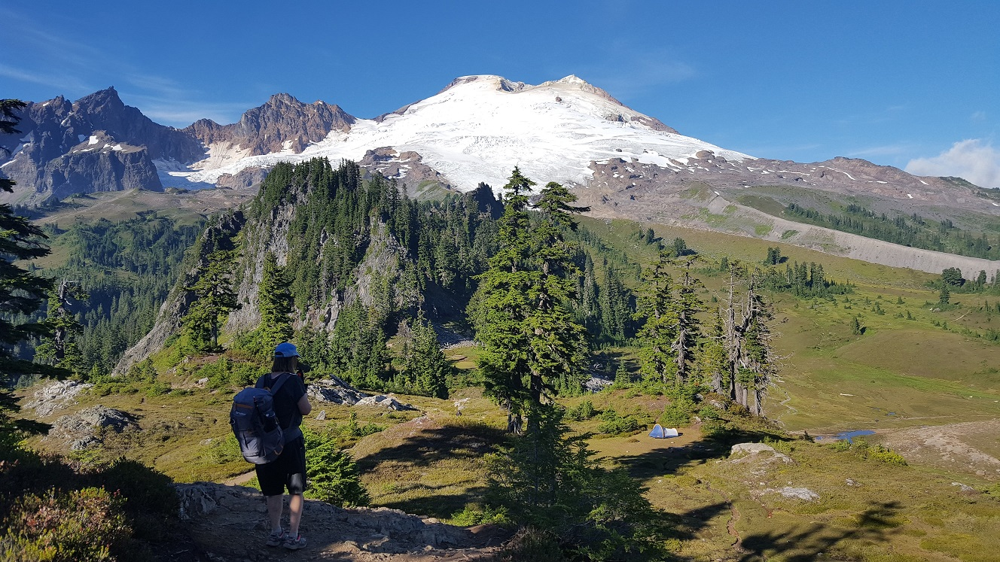

Backpacking Trips
A list of the backpacking trips I have taken over my lifetime and a little bit about each of them.
"The mountains are calling and I must go." -John Muir
Upper Lopez Canyon, California 1980s
This is a trip I took in my teenage years with friends. We made this trek at least twice, but even the participants are a little vague at this point. I have photographic evidence that one trip was with friends, but I also remember another trip with Steve S.
Mileage: ~9 round trip. Elevation: unknown

Pine Ridge Trail, Ventana Wilderness Area, California December 31, 1985
The infamous trip with Erran that started out as a day trip and ended with a stay in the hospital. A late start from the Ventana State Park campground and up the trail past the turnout to Ventana Camp, where we stopped for an MRE lunch. By the time we found the turnout we had missed, it was getting dark. Approaching Bad Gulch, we could not see our hands in front of our faces. The emergency matches we had brought would not light and the candle wick was useless. When the trial made a turn to follow the contour of the mountain ... we did not. Our hike ended with a 90 foot fall down a cliff into Bad Gulch and onto a 45 degree slope. We were found the next day by a pair of trail runner who were looking for their sister who had gone missing on the same trail. Rescue came 12 hours later and ended for both of us with extensive injuries and a long hospital stay.
Mileage: ~ 5 one-way. Elevation: unknown
Pine Ridge Trail, Ventana Wilderness Area, California 1994
A return trip with Erran and his girlfriend. This time we actually made Ventana Camp and hiked back out the next day - stopping at Bad Gultch.
Mileage: 10 round trip. Elevation: +/-1,180 ft
Noble Canyon/Pine Creek Trail, California 1995
Another partial trip in which I tried to stitch together two trips 10-15 miles each. The first leg started near Mt. Laguna (east of San Diego in Cleveland National Forest) and ended north of I-8, where I spent the night. The next day along the Pine Creek Trail, I hurt my knee and had to pull out.
Mileage: ~12 one-way. Elevation: unknown
Pine Ridge Trail, Ventana Wilderness Area, California 1996
A 10th anniversary hike back to Ventana Camp, this one started out on Friday evening for what would be my first intentional night hike. This trip included a zero in VC before hiking out on Sunday. A stop in Bad Gultch was obligatory.
Mileage: 10 round trip. Elevation: +/-1,180 ft


Rae Lakes Loop, Kings Canyon National Park, California Oct. 1996
My first big hike. This epic trip from the floor of Kings Canyon road's end (elev. 5,000 ft.) to the top of Glen Pass (elev. 11,982 ft.) over four days and three nights would be my longest and most difficult hike for decades.
Mileage: 45 loop Elevation: +/-7,000 ft Trail Description

Hamilton Lake, Sequoia Nation Park, California Oct. 1997
Another attempt at epic miles, this one fell short. What started as a 55 mile loop trail ended in Hamilton Lake short of Kahwea Gap after a lightning storm changed my mind about the trip. It still became my second-longest trip at over 16 miles each way. Trip included a night at Bearpaw Meadow near the High Sierra Camp and a view of the alpineglow reflecting off of the Great Western Divide.
Mileage: 34 round trip. Elevation: +/-6,500 ft. Trail Description


Wind Gap to Delware Water Gap, Pennsylvania May 2001
My first backpacking trip while dating Connie. We did an overnight hiking along the Appalachian Trial. Lots of rocks on this trip that stayed under the canopy of the "green tunnel" for the entire trip.
Mileage: 15 one-way. Elevation: +/-850 ft. Trial Description
Lassen Nation Park, California 2002?
This is more of a placeholder for a largely forgotten trip. It was in Lassen. I made chicken 'n dumplings. We got sick. Rough trip.
Mileage: unknown Elevation: unknown Trial Description
Round Top, Fourth of July Lake, California Jul. 2003
We have a videotape of this trip that needs to be transferred off of 9mm. It started with me forgetting my hiking boots and subsequently hiking in sandals for the three days we were out. Not a lot of solid figures on this one. Camp Irene Trail to Summit City Canyon Trail to Pacific Crest Trail. Last trip before Julia was born.
Mileage: 16 loop Elevation: 3,300 ft Trail Description
Cobalt Lake, Glacier National Park, Montana Aug. 2011
This was our first trip since having Julia and our first trip with her along.This was an alternate because of bear activity in our intended destination. Interestingly, we saw a young Grizzly on our trip anyway. Cobalt Lake was a beautiful destination and we saw mountain goats in the cliffs above our campsite. The trip was supposed to be 3 days, but I was only good for two. it would be my last overnighter for eight years.
Mileage: 11.6 round trip Elevation: +/-1,400 ft Trial Description

Spectacle Lake, Alpine Lakes Wilderness, Washington Aug 2019
Solo overnight trip that started out as a "we'll see" and ended up working out pretty well. After a long summer of testing my limits, this became an opportunity to push them. The lake was beautiful and lit the fire necessary to begin working toward more trips in the coming years.
Mileage: 22 round trip Elevation: +/-1,300 ft Trail Description

Boardman Lake, Washington Sep 2019
Short trip with the whole family (including the dogs) to a pretty little lake in the woods.
Mileage: 2 round trip Elevation: +/-200 ft Trail Description

Waptus Lake, Deep Lake, Pacific Crest Trail, Washington Jul 2020
This trip came on the heals of a failed attempt to traverse the PCT "J section". After snow prevented me from starting at Steven's Pass and a weekend regroup, led to the second-longest trip to date and beautiful solo night at Deep Lake. Three nights total.
Mileage: 35 round trip Elevation: +/-3,150 ft Trail Description

Chinook Pass to Goat Rocks (Walupt Lake), Pacific Crest Trail, Washington Aug 2020
The big one. My longest trip to date. This began as a trip with Ian from the Chinook Pass trailhead along the Pacific Crest Trail southbound. We made it together the 30 miles to White Pass before Ian had to say goodbye. After that I continued solo through Goat Rocks Wilderness and across the fabulous Knife's Edge before crossing Cispus Pass and exiting via Walupt Lake. Six days total.
Mileage: 63 one way Elevation: +/-10,700 ft Trail Descripton

Park Butte, Mount Baker National Forest, Washington Sep 2020
Overnight trip with Connie to the lookout tower at base of Mount Baker. Beautiful campsite in the shadow of the mountain with views all the way to the Sound. Heard the crashing of ice from the glaciers (like the sound of thunder) late in the evening and had a beautiful sunset before bed.
Mileage: 8 round trip Elevation: +/-2,000 ft Trial Description

So what comes next .... ?
- Washington
- California
Long Trails
| Trail Name | Distance | Maximum | States Visited | Miles/ | Travel | Travel |
|---|---|---|---|---|---|---|
| Elevation | Day | Days | Weeks | |||
| Wonderland Trail | 93 mi | unk | Washington | 10 | 9 | 1.3 |
| Loowit Trial | 32 mi | unk | Washington | 8 | 4 | 0.5 |
| Timberline Trail | 40 mi | unk | Oregon | 10 | 4 | 0.5 |
| West Coast Trail | 45 mi | unk | British Columbia, Can. | 10 | 5 | 0.7 |
| John Muir Trial | 211 mi | 14,494 ft | California | 10 | 21 | 3.0 |
| Tahoe Rim Trail | 165 mi | 10,388 ft | California | 12 | 14 | 2.0 |
| Colorado Trail | 486 mi | 13,271 ft | Colorado | 10 | 49 | 7.0 |
| Pacific Crest Trail | 2,650 mi | 13,200 ft | California, Oregon, Washington | 15 | 177 | 25 |
| Pacific Northwest Trail | 1,200 mi | unk | Montana, Idaho, Washington | 12 | 100 | 14.5 |
| The Hayduke | 812 mi | 11,419 ft | Utah, Arizona | 12 | 68 | 10 |
| Continental Divide Trail | 3,100 mi | 14,278 ft | New Mexico, Colorado, Wyoming, Idaho, Montana | 15 | 207 | 30 |
| Arizona Trail | 790 mi | 9,600 ft | Arizona | 12 | 66 | 10 |
| Appalachian Trail | 2,150 mi | 6,643 ft | GA-NC-TN-VA-WV-MD-PA-NJ-NY-CT-MA-VT-NH-ME | 12 | 179 | 26 |
Search For Your Favorite Hike
Search Reddit
Search YouTube